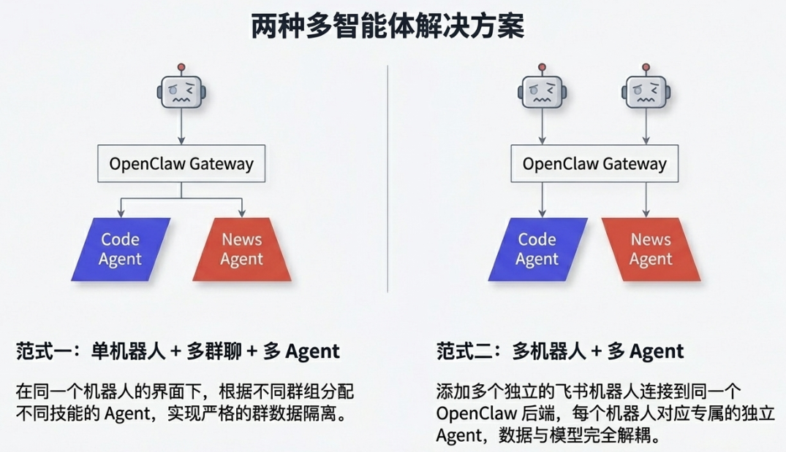
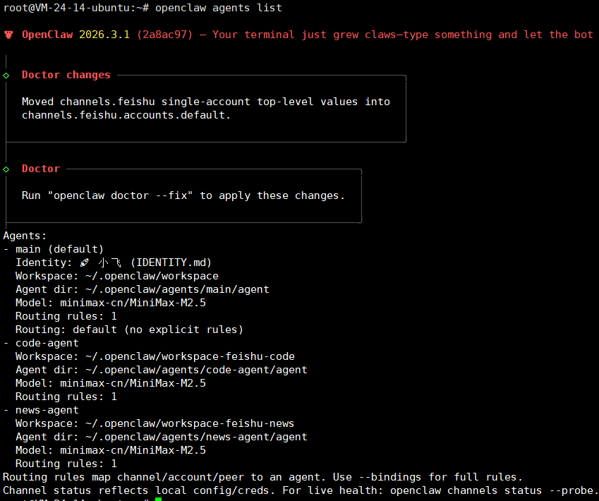
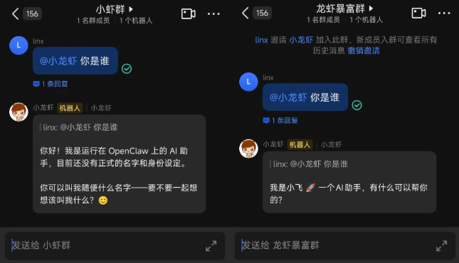
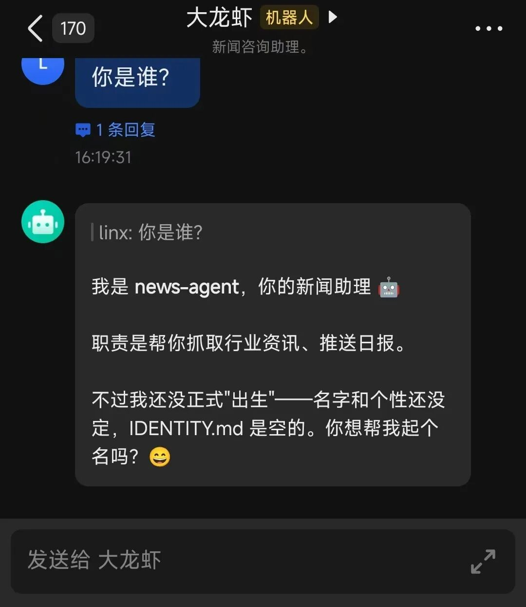
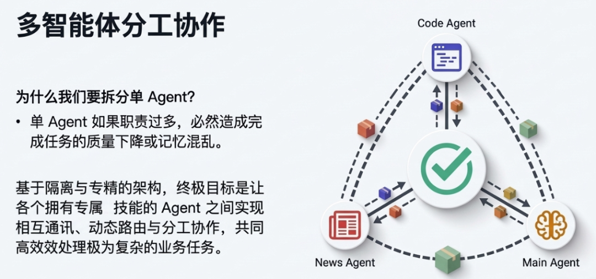

默认情况下添加飞书频道绑定一个机器人之后，这时每个机器人对应的是一个 Agent。你将该机器人拉到不同的群中他对应的也只是同一个机器人，在 OpenClaw 端背后对应着同一个 Agent，下面两种方式可以实现机器人在不同群组中对应不同的 Agent。
单机器人多群聊多Agent：配置多个群聊对应单机器人多个不同 Agent，每个 Agent 之间数据隔离、模型可以不一样，实现群数据隔离。
多机器人多Agent：添加多个机器人连接到同一个 OpenClaw，不同的机器人可以对应不同 Agent，Agent 之间数据隔离、模型可以不一样。

单机器人多群聊多 Agent
多个群组同时往一个机器人发消息时由于它背后对应的是同一个 Agent 此时如果 Agent 有在处理任务其他消息会进入队列等待。如果想让同一个机器人在不同的群中扮演不同的角色，对应不同的技能，不同群组之间数据进行隔离能否做到？答案是可以做得到，这就是本章节要介绍的主要内容。
多群聊单个机器人对应 OpenClaw 中多个不同的 Agent，就能达到上面所说的目标：不同的技能，不同群组间数据隔离。
1备份 OpenClaw
备份是为了避免误操作之后无法回复数据。
cp ~/.openclaw/openclaw.json ~/.openclaw/openclaw.json.bak_$(date +%Y%m%d_%H%M%S)
ls -l ~/.openclaw/openclaw.json*
恢复 OpenClaw 的配置。
cp ~/.openclaw/openclaw.json.bak_YYYYMMDD_HHMMSS ~/.openclaw/openclaw.json
##openclaw.json.bak_YYYYMMDD_HHMMSS为备份时的实际文件名
2新增 Agents
使用 openclaw agents add 命令可以添加新 Agent，需要把 workspace 路径和 Agent 的名称换为自己设置的路径和名称：
openclaw agents add --workspace 工作空间路径 Agent名称
参数说明：
--workspace：独立的工作空间路径，如：/root/.openclaw/workspace-feishu-code
Agent名称：此名称唯一，也啊AgentId，可为任意名称，推荐见名知意，如：code-agent
--model：需要使用自定义模型，可以添加此参数填写模型 ID，否则使用默认模型
这里以创建一个Code Agent 为例，命名为code agent，对应的 workspace 设置为 /root/.openclaw/workspace-code-agent。
openclaw agents add --workspace /root/.openclaw/workspace-code-agent code-agent
3验证 Agent
查看创建的 Agent 是否成功。
openclaw agents list

4飞书群组绑定
配置飞书群组与 Agent 的绑定关系，先查看当前是否还有其他绑定数据，现在需要新增一个群组与 Agent 的绑定关系。 查看当前的绑定关系： openclaw config get bindings
在原来的基础上添加新的绑定关系，如果当前绑定为空，可以在替换 id 为实际的飞书群组会话 id 后直接执行下面语句。
openclaw config set --json bindings '[
{
"agentId": "code-agent",
"match": {
"channel": "feishu",
"peer": {
"kind": "group",
"id": "oc_34fdfds3333jkjjjjhhhhbdd222"
}
}
}
]'
对于存在绑定关系的可以先 get bindings 得到原先关系，在按照下面方法设置新关系。路由的匹配规则：从精确到模糊、从上到下。精确的路由规则尽量放在上面，Default 为兜底规则。
执行：config set --json bindings '[ 原绑定, 新飞书群绑定 ]'
绑定完后可再次执行下面指令，确认是否绑定正确。
openclaw config get bindings 5群组允许列表
默认 channels.feishu.groupPolicy 是 open，允许响应所有群组的消息，可以将其设置为 allowlist。只响应经过授权的群组消息。
使用 allowlist 策略确保配置在 groupAllowFrom 中的群组才可访问 OpenClaw。
openclaw config set channels.feishu.groupPolicy allowlist
openclaw config set --json channels.feishu.groupAllowFrom '["oc_34fdfds3333jkjjjjhhhhbdd222"]'
在非授权群组@机器人时 OpenClaw 日志如下：
[feishu] feishu[default]: received message from ou_29474ba1e15f058a10da8b83c037734d in oc_12c8eec3fcb22fc9aa634dfe29fddfxx (group)
[feishu] feishu[default]: group oc_12c8eec3fcb22fc9aa634dfe29fddfxx not in groupAllowFrom (groupPolicy=allowlist)
6重启 Gateway
openclaw gateway restart
配置完后可看到新的 agent。
同一个机器人在不同的群组中绑定不同 Agent，数据按群组隔离。

多机器人多 Agent
上面使用过了 openclaw config 指令完成 OpenClaw 配置的更新，这里直接修改 openclaw.json 文件完成多机器人多 Agent 的配置。
1创建工作空间
mkdir -p /root/.openclaw/workspace-news-agent
编辑 openclaw.json 文件
执行 vim /root/.openclaw/openclaw.json 在 agents 键的 list 数组中添加一个 Agent，这里新增的 Agent 为 news-agent。
"list": [
{
"id": "main"
},
{
"id": "code-agent",
"name": "code-agent",
"workspace": "/root/.openclaw/workspace-feishu-code",
"agentDir": "/root/.openclaw/agents/code-agent/agent"
},
{
"id": "news-agent",
"name": "news-agent",
"workspace": "/root/.openclaw/workspace-feishu-news",
"agentDir": "/root/.openclaw/agents/news-agent/agent",
"model": {
"primary": "minimax-cn/MiniMax-M2.5"
}
}
]
id: Agent 唯一标识
agentDir: agent目录
default: 标记默认 Agent 只有一个可为 true
workspace: 工作空间路径
model.primary: Agent 使用的模型
这里 id 为 main 的为默认主 Agent，可以不要此 Agent，添加 default 为 true 的 key 将其他 Agent 设置为主 Agent。
2配置飞书机器人
channels.feishu 键中新添加一个机器人：
"channels": {
"feishu": {
"enabled": true,
"accounts": {
"main":{
"appId": "cli_a911111111111111",
"appSecret": "WeiX4e8rjfLR91Uz0N7xTeqffffffffff"
},
"news-agent":{
"appId": "cli_a922222222222222",
"appSecret": "f9oDvGGhVRjDeAbXjEL1hggggggggggggg"
}
},
"domain": "feishu",
"groupPolicy": "open",
"dmPolicy": "open",
"allowFrom": [
"*"
],
"renderMode": "card",
"streaming": true,
"footer": {
"status": true,
"elapsed": true
},
"groupAllowFrom": [
"oc_12xxxxxxxxxxxxxxxxx"
]
}
}
每个 accounts 的 key（如 code-agent）与每个 Agent ID 一一对应。 appId 和 appSecret 为每个飞书机器人的应用凭证。
3配置绑定路由
"bindings": [
{
"agentId": "code-agent",
"match": {
"channel": "feishu",
"accountId": "main",
"peer": {
"kind": "group",
"id": "oc_12xxxxxxxxxxxxxxxxx"
}
}
},{
"agentId": "news-agent",
"match": {
"channel": "feishu",
"accountId": "news-agent"
}
}
]
修改完 openclaw.json 后执行 openclaw config get bindings 检查绑定对不对。
match.channel: 固定为 "feishu"
match.accountId: 对应飞书机器人的 key 这里是 news-agent
agentId: 消息路由到的 Agent
还可以为每个Agent 创建记忆文件如IDENTITY、SOUL.md、AGENTS.md、MEMORY.md 等。
4重启 Gateway
##重启
openclaw gateway restart
## 查看状态
openclaw gateway status
重启完之后即可看到新接入的不同 Agent 的机器人。

完成上面的配置后 OpenClaw 同时具备了单机器人多群聊多 Agent、多机器人多 Agent 的能力。
结语
这里使用了两种方式来完成 OpenClaw 多 Agent 的配置。使用命令行完成 Agent 的添加、配置的修改可能对非IT人员来说更简单下，直接修改~/.openclaw/openclaw.json 文件也许对于非码农来说可能难度更高。当然还可以直接使用小龙虾来完成上述模型，如果你用的是比较差的模型，你还是慎重，小龙虾比较容易把自己搞死。

单Agent如果职责过多可能会造成完成任务的质量下降或记忆混乱。
只有当底层的 Agent 实现了清晰的职责分明与状态隔离，我们才能在此基础上，进一步引入 Agent 之间的相互通讯与协同机制。通过构建一套高效的 AI 工作流（Workflow），让这些拥有独立“灵魂”的智能体像一个真正的技术团队一样分工协作，这才是通往复杂 Multi-Agent 架构的必经之路。